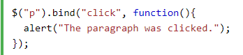
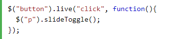
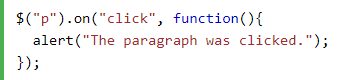

Actually All these 3 are jQuery methods that is used for attaching events to selectors or elements to perform some action. But they all are different from each other.
This is the easiest and quick method to bind the events. But the issue with bind() is that it doesn't work for elements added dynamically that matches the same selector. bind() only attach events to the current elements not future element. Above that it also has performance issues when dealing with a large selection.

This method overcomes the disadvantage of bind(). It works for dynamically added elements or future elements. But Because of its poor performance on large pages, this method is deprecated as of jQuery 1.7 and you should stop using it. Chaining is also not properly supported using this method.

Since live was deprecated with 1.7, so new method was introduced named ".on()". This method provides all the goodness of previous 3 methods and it brings uniformity for attaching event handlers.
